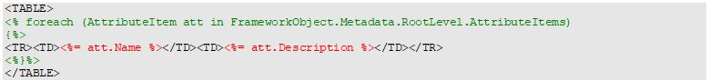

There are two types of code tags in the GeneXus Template Engine.
The <% %> tag encapsulates code written in the language specified in the “Language” parameter of the Template directive. For example, in the following example:

The code highlighted in green will iterate through the attributes in the first level of a GeneXus object and write the enclosed tags to the output for each one.
The <%= %> tag specifies an expression that will be written to the generated code. The expression must be written in the language specified in the “Language” parameter of the Template Directive. The code highlighted in red will write to the generated code the name and description of the GeneXus attribute.
<script> Tag
The <script> tag allows you to provide methods that are callable from within your template. Its purpose is similar to the Include directive, but it’s useful when the methods only make sense in the context of a single template.
The syntax is:
<script runat=”template”> … code </script>
The runat= must be set to “template”, otherwise, the value will be treated as text by the generator and will be written to the code generator output. The code must be written in the same language specified in the “Language” parameter of the Template Directive.
| Backlinks |
| Toc:GeneXus Template Language |